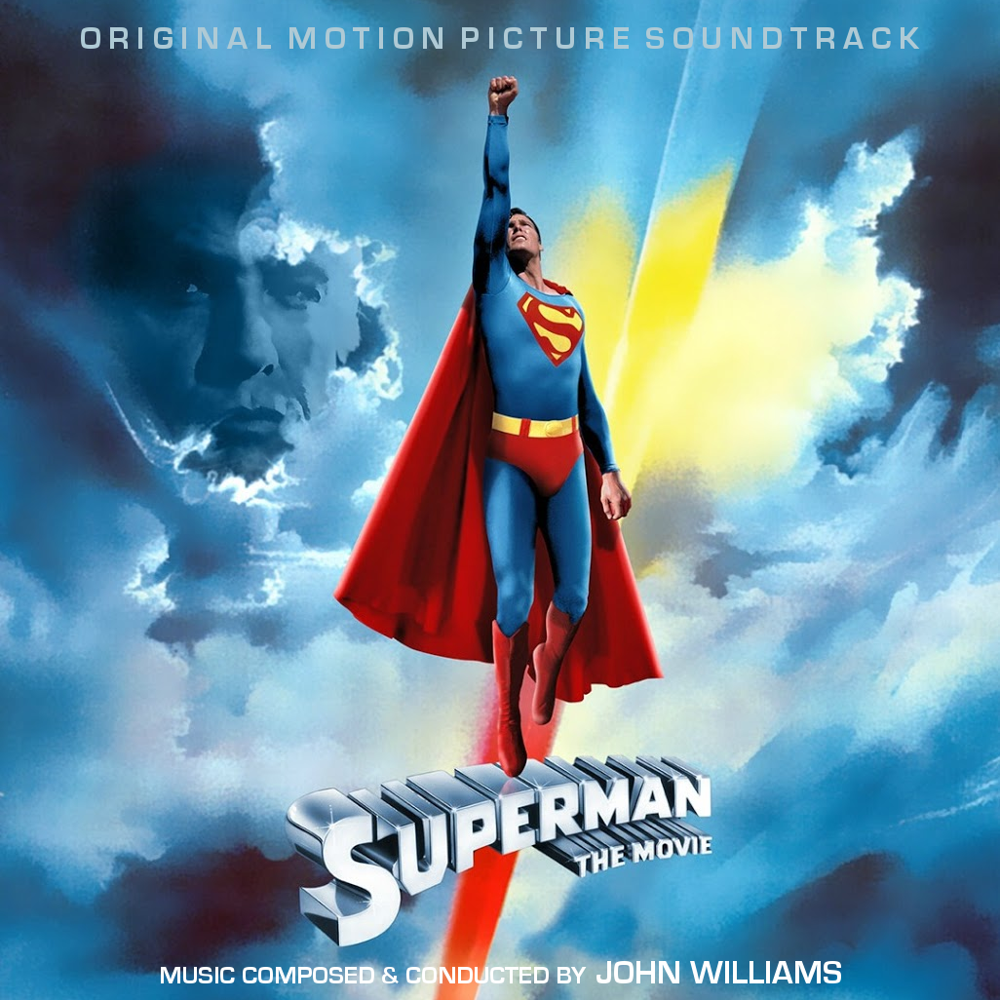
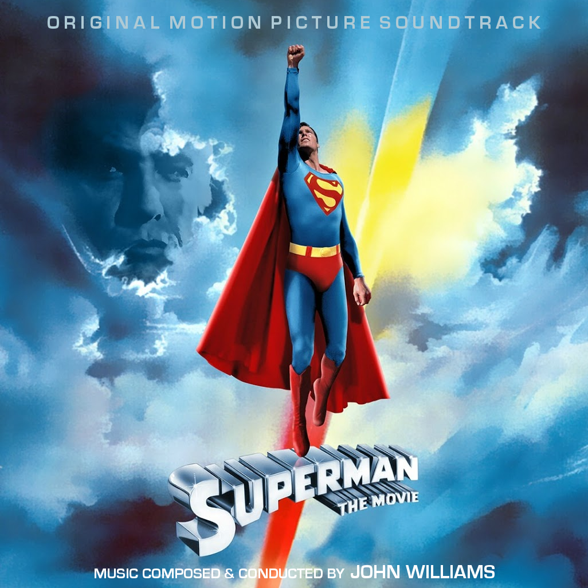
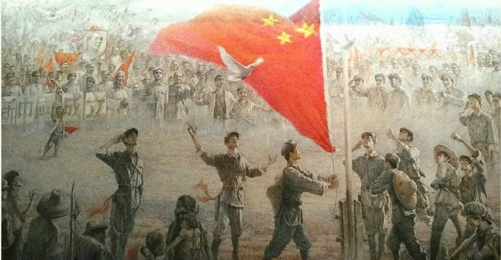

Theme From Superman - John Williams
an re-orchestration on Theme from Superman.All Instruments used were free.

an re-orchestration on Theme from Superman.All Instruments used were free.

an old revolution song.
在1980年以前，中国的革命家都是为了农民和穷人的利益而战，他们打击富有的人群，并没收了地主的土地分给农民。 但后期他们被改革派打倒了，他们的精神已经成为历史，当今知识分子更在乎GDP和政绩……
Before 1980, revolutionaries in China fought for the benefit of farmers and the poor. They attacked the rich and confiscated the land of landlords and distributed it to farmers. But they were overthrown by reformers in the later period, and their spirit has become history. Today's intellectuals care more about GDP and political achievements ...
